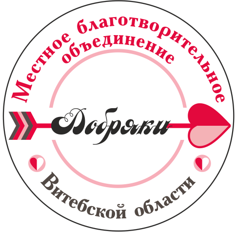
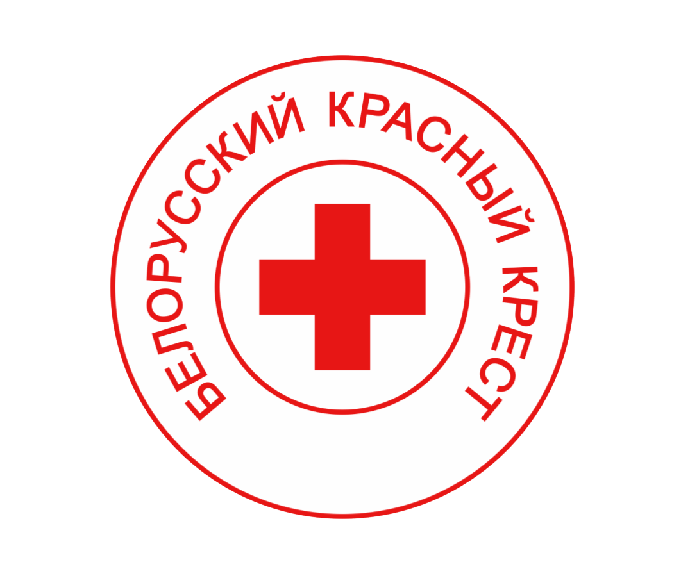
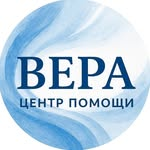
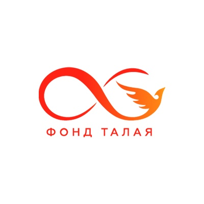
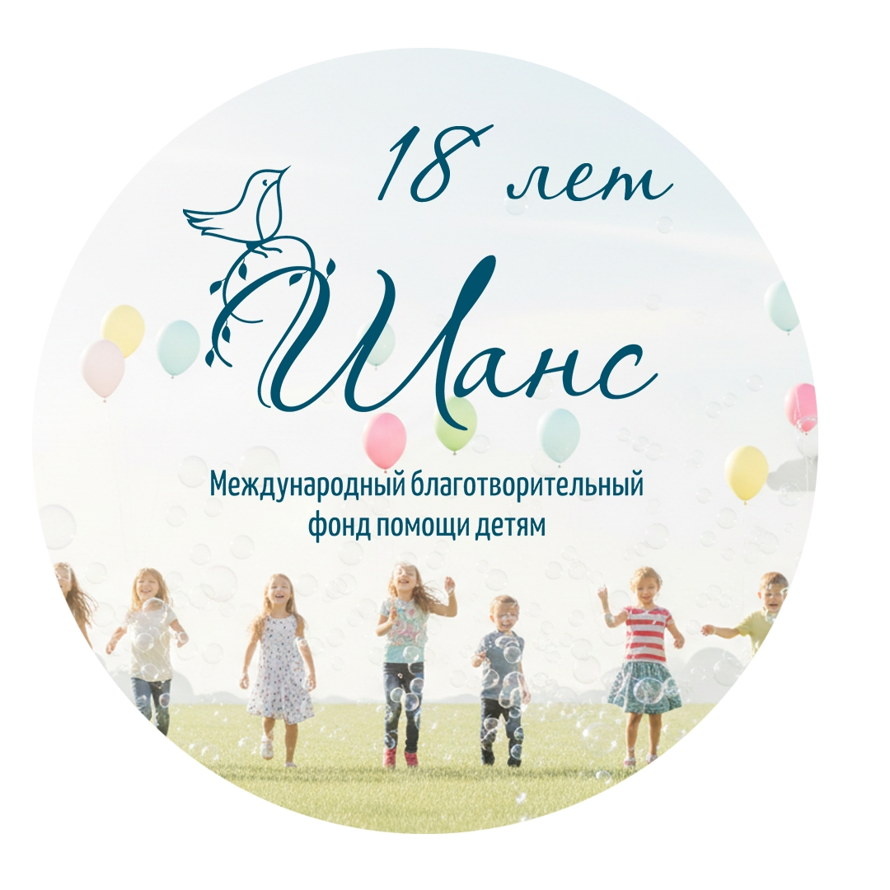
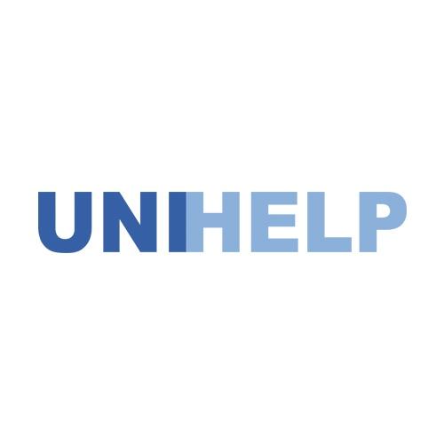

- - Посещение детских домов
- - Посещение домов социального типа;
- - Проведение благотворительных акций;
- - Организация экологических, творческих и спортивных благотворительных мероприятий;
- - Адресная помощь.
Сделать пожертвование:
В любом отделении банка или через интернет-банкинг по реквизитам: благотворительный счет BY29AKBB30150559700062200000, открыт в филиале ОАО"АСБ Беларусбанк", БИК AKBBBY2X, УНП 390541690
Контакты:
- Сайт: http://dobryaki-belarusi.of.by/
- Мы в ВКонтакте: https://vk.ru/dobryaki_belarusi
- Мы в Инстаграмме: https://www.instagram.com/dobryaki_belarusi/?hl=ru
- Мы в Одноклассниках: https://ok.ru/dobryakibelarusi

Крупнейшее республиканское общественное объединение в Республике Беларусь, осуществляющее гуманитарную деятельность.
Сегодня Белорусский Красный Крест - это Секретариат, 6 областных, Минская городская и Дорожная организация, 158 районных (узловых) организаций и более 8 тысяч первичных организаций.
Белорусский Красный Крест - это свыше 13 тысяч волонтеров по всей Беларуси, которые направляют свои силы на то, чтобы защищать и улучшать жизнь тех, кому нужна помощь.
Мы стремимся мобилизовать гуманитарный потенциал общества и привлечь как можно больше людей стать приверженцами Международного движения Красного Креста и Красного Полумесяца и помогать друг другу.
Сделать пожертвование:
Контакты:
- Сайт: https://redcross.by/
- Контакты: https://redcross.by/contacts
- Электронная почта: info@redcross.by
- Мы в ВКонтакте: https://vk.com/redcrossbel
- Мы в Инстаграмме: https://www.instagram.com/redcrossbelarus/
- Мы в Фейсбуке: https://www.facebook.com/redcross.by/
- Мы в Телеграмме: https://t.me/redcrossby
- Мы в Вайбере: https://invite.viber.com/?g2=AQBPWdCmbamp20xBv3Jtlxhs3lYhrgYZZpmnDyqiX1GoZe%2BgJbtzaJ8fCjhRWpyd

Центр помощи "ВЕРА" - благотворительная организация помощи детям-инвалидам, тяжелобольным детям, детям-сиротам, детям из нуждающихся семей, а также взрослым, оказавшимся в трудной жизненной ситуации.
Хочу помочь:
Контакты:
- Сайт: https://vera.by/
- Контакты: https://vera.by/o-nas/kontakty/
- Наш адрес почтовый/юридический: 230027, г.Гродно, ул. Репина 5а
- Контактный телефон: +375 33 61 333 61
- Электронная почта: centr@vera.by
- Мы в Инстаграмме: https://www.instagram.com/center__vera/
- Мы в Ютубе: https://www.youtube.com/channel/UC-qFBJTqwvOcbaEh3J_21oA

Благотворительный Фонд имени Алексея Талая оказывает посильную помощь инвалидам, тяжелобольным, детям-сиротам и детям без попечения родителей. Фонд основан Алексеем Талаем и Общественным объединением «Белорусская федерация лёгкой атлетики».
Сделать пожертвование:
https://wetogether.by/podderzhat-fond/
Контакты:
- Сайт: https://wetogether.by/
- Контакты: https://wetogether.by/kontakty/
- Электронная почта: vmeste@wetogether.by
- Мы в ВКонтакте: https://vk.com/alexey.talay_official
- Мы в Одноклассниках: https://ok.ru/alexeytalai
- Мы в Фейсбуке: https://www.facebook.com/AlexeyTalaiFundGroup/

Международный благотворительный фонд помощи детям "Шанс" оказывает безвозмездную адресную помощь больным детям (оплата лечения, хирургических вмешательств, приобретение лекарственных средств и медицинской техники) в случаях, когда медицинская помощь не может быть оказана государственными медицинскими учреждениями либо оплачена за счет бюджетных средств.
Как помочь:
https://www.chance.by/help/individuals/
Контакты:
- Сайт: https://www.chance.by/
- Контакты: https://www.chance.by/contacts/
- Телефон: +375 (17) 215-00-66
- Телефон: +375 (17) 215-00-67
- Моб. телефон: +375 (44) 711-11-17 (А1)
- Моб. телефон: +375 (29) 222-25-13 (МТС)
- Моб. телефон: +375 (29) 125-73-48 (А1)
- Почтовый адрес: Фонд «ШАНС». пр-т Жукова, 44-2, офис 309 220014, г. Минск
- Мы в ВКонтакте: https://vk.com/chance_foundation
- Мы в Инстаграмме: https://www.instagram.com/chance_foundation/
- Мы в Ютубе: http://www.youtube.com/user/chancefond
- Мы в Фейсбуке: https://www.facebook.com/FoundationChanceBelarus
- Мы в Телеграмме: https://t.me/fondchance

- Мы оказываем помощь и поддержку:
- — детским домам и домам ребенка
- — домам-интернатам
- — территориальным центрам социального обслуживания населения
- — центрам социального обслуживания семьи и детей
- — учреждениям образования (школам, учреждениям профессионально-технического образования, вузам)
Хочу помочь:
https://unihelp.org/sdelat-pozhertvovanie
Контакты:
- Сайт: https://unihelp.org/
- Контакты: https://unihelp.org/o-nas/kontakty
- Телефон: +375 (17) 24-34-000
- Телефон: +375 (17) 24-35-000
- Электронная почта: info@unihelp.by
- Мы в ВКонтакте: https://vk.com/unihelp
- Мы в Одноклассниках: https://ok.ru/unihelp
- Мы в Инстаграмме: https://www.instagram.com/unihelp.by/
- Мы в Ютубе: https://www.youtube.com/unihelpby
- Мы в Фейсбуке: https://www.facebook.com/unihelp.by